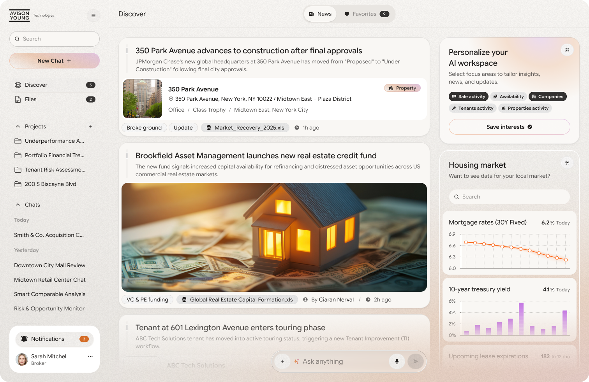
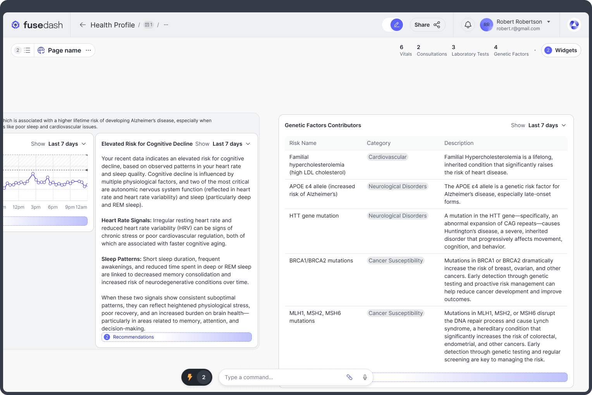
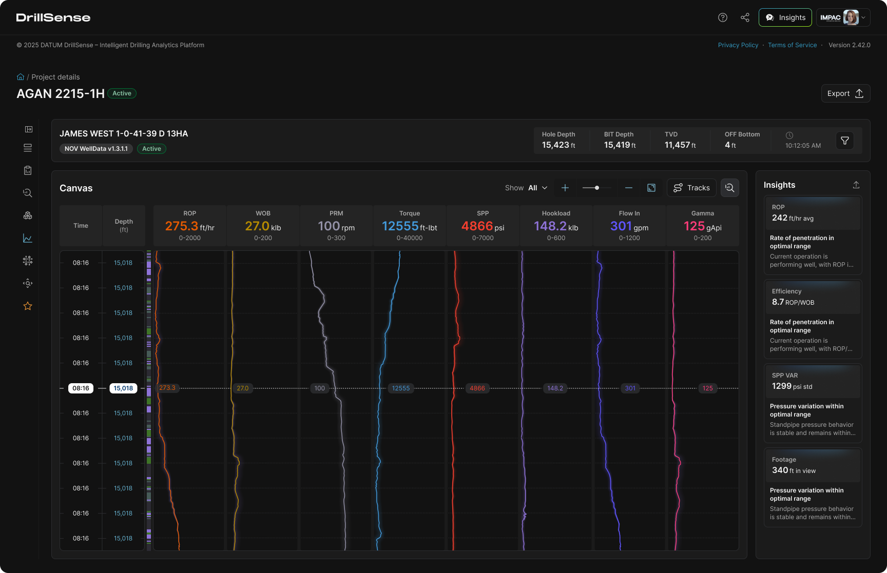

Strategic presentation
AI Integration at FuseLab Creative.
FuseLab Creative transforms client products with intelligent design, embedding AI as a fundamental architectural decision that shapes every interaction, workflow, and outcome.
Navigation page
Table of Contents
Who we are
We architect intelligent experiences.
FuseLab embeds AI at the product design layer, treating intelligence as a product capability to be designed, trusted, and measured from day one.
The Opportunity
Why AI integration in product design matters now.
Users expect intelligent products, AI creates competitive moats, and FuseLab bridges design and AI simultaneously across the product experience.
How We Work
FuseLab's AI integration approach.
FuseLab starts with user friction, maps the right AI capability, designs the AI experience, and measures the result against real business outcomes.
Product Impact
Three AI-integrated products. Distinct use cases. Measurable outcomes.
FuseLab applied the same AI-native design philosophy across commercial real estate, real-time interfaces, and operational intelligence products.
Commercial Real Estate
Avison Young
AI-powered business development and CRM support for brokers who were spending too much time on manual prospecting and fragmented relationship tracking.

Real-Time Interface
FuseDash Real Time Interface
A real-time collaborative interface where AI reduces layout burden, simplifies workflows, and acts as an in-context co-pilot during active sessions.

Operational Intelligence
Drill Sense
An AI-enabled intelligence layer for teams overwhelmed by data but starving for clear answers, fast reporting, and predictive visibility.

Portfolio Summary
AI that users feel. Outcomes that move the needle.
The closing frame summarizes the three featured products and the AI-native patterns FuseLab brought into each experience.
Presentation flow